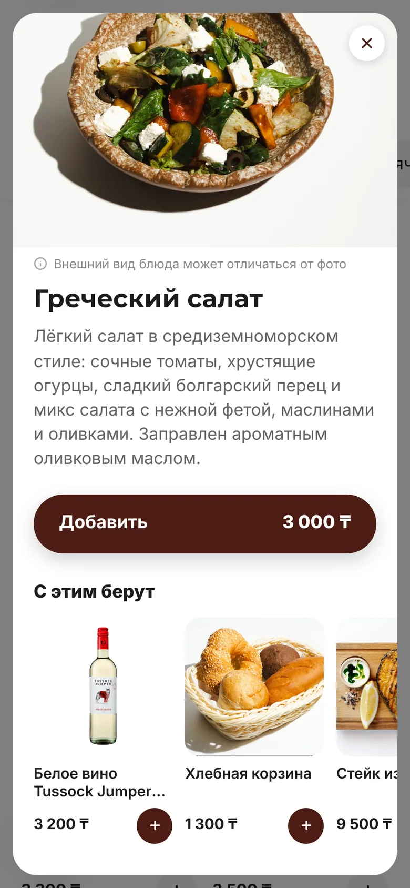
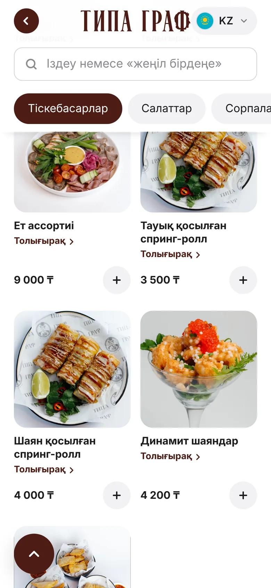
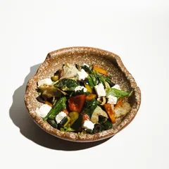
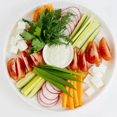
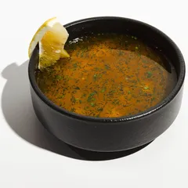
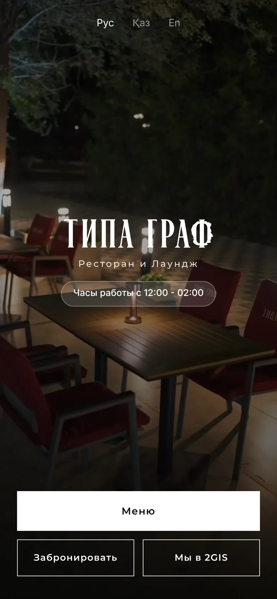
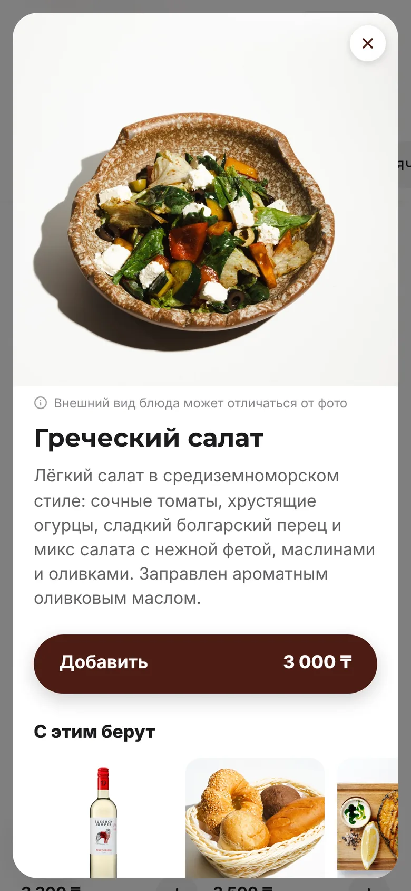

Цена выросла — меню перепечатывать
Цену и стоп-лист меняете за 10 секунд
С телефона, в админке. Гости сразу видят новое. Никакой типографии и зачёркнутых цен ручкой.
QR-меню для кафе и ресторанов Казахстана
Гость сканирует QR и за секунды находит блюдо на своём языке. Меню само подсказывает, что взять к заказу, а цены и стоп-лист вы меняете с телефона за минуту.
Цена выросла — меню перепечатывать
С телефона, в админке. Гости сразу видят новое. Никакой типографии и зачёркнутых цен ручкой.
Официант забыл предложить напиток
Под каждым блюдом «С этим берут», наверху — Хиты, которые чаще всего заказывают. Средний чек растёт без уговоров.
Гость ждёт, чтобы спросить состав
Гость пишет «без мяса» или «что к пиву» и сразу видит подходящие блюда с фото. Решает быстрее, заказывает больше.
Не все гости читают по-русски
Язык переключается одной кнопкой: названия, описания и поиск. Туристы и казахоязычные гости чувствуют себя как дома.
Гость пишет «хочу что-то лёгкое» или «что к пиву», и меню подбирает блюда из вашей карты с объяснением, почему они подходят.
Нажмите, это настоящие ответы меню Типа Граф:

Открыл салат и видит, что к нему заказывают: вино, хлебную корзину, стейк. Добавляет в один тап. Официанту не нужно уговаривать.
Язык переключается одной кнопкой: названия, описания и поиск. Каждый гость читает меню так, как ему удобно.


Греческий салат
Овощная нарезка
Уха классическаяПоменяйте цену или выключите блюдо: так это выглядит в админке.
Бумажное меню молчит. tut.menu показывает, какие блюда открывают, какие заказывают, а какие смотрят и пропускают — чтобы вы меняли фото, цены и позиции по цифрам, а не наугад.
Какие блюда открывают
Смотрят, но не берут
Томлёная лопатка ягнёнка
Возможно, стоит поменять фото или цену
Откуда добавляют в корзину
Первый ресторан на tut.menu. Это настоящее меню, им каждый день пользуются гости. Наведите камеру на QR или откройте tipagraf.kz.


2 минуты: выберите дизайн, загрузите логотип и получите ссылку на своё меню.
Пришлите PDF, фото бумажного меню или таблицу. Блюда, цены и описания внесём сами.
Даём готовые QR-коды для печати. Дальше меняете меню сами, мы на связи в WhatsApp.
Пришлите ссылку — перенесём всё за минуты: категории, блюда на трёх языках, цены и фото. Ничего не нужно перепечатывать.
Не подгоняем вас под тариф. Скажите, сколько готовы вкладывать в месяц, — соберём меню, которое окупится именно у вас.
Сколько готовы вкладывать в месяц?
Оптимально
Напишем, что получится в вашем бюджете. Или сначала соберите демо бесплатно.
В любом бюджете
7 дней бесплатно, карта не нужна
Зависит от того, что нужно именно вам: от меню на нашем адресе до своего домена и дизайна под ключ. Назовите бюджет в WhatsApp — предложим вариант, который в него укладывается. Первые 7 дней бесплатно.
Пришлите ссылку на ваше меню — перенесём категории, блюда на трёх языках, цены и фото. Гостям останется только отсканировать новый QR.
Меню не мешает оплате: гость платит как обычно, через Kaspi QR или терминал. Можем добавить в меню кнопку с вашей ссылкой на оплату Kaspi.
Сейчас меню ведётся в нашей админке, цена меняется за десять секунд. Синхронизацию с iiko обсуждаем под ваше заведение.
Демо собирается за 2 минуты. Готовое меню с вашими блюдами обычно запускаем за 1–2 дня.
Мы. Пришлите PDF, фото бумажного меню или таблицу, и мы перенесём блюда, цены и описания сами. Дальше правите в админке.
Нет. Меню открывается в браузере по QR-коду, ничего устанавливать не нужно.
Да, как tipagraf.kz. Если домена ещё нет, подскажем, где купить, и подключим сами.
Выберите дизайн, загрузите логотип и получите ссылку на демо с вашим названием. Бесплатно и без звонков.
Сделано в Уральске. Работаем по всему Казахстану.